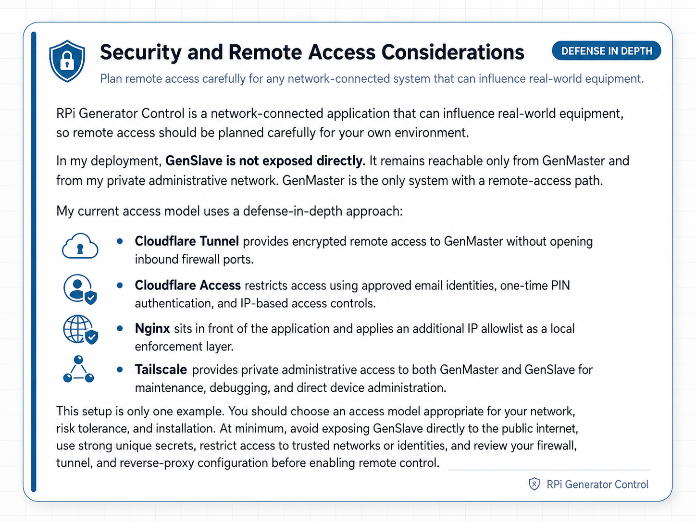
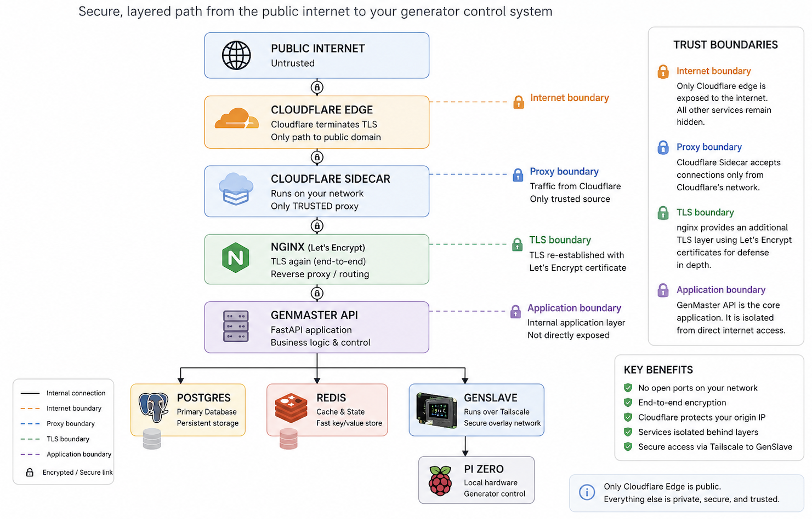

Security Model & Configuration Guidelines¶
This document describes how RPi Generator Control protects itself, what it trusts and why, and how to harden a deployment beyond the safe defaults.
If you only read one section, read Threat model and Hardening checklist.

Threat model¶
The system is designed for a single owner-operator running on their own network, not a multi-tenant or untrusted environment. Within that scope, the threats we explicitly defend against are:
| # | Threat | How we mitigate it |
|---|---|---|
| 1 | A random visitor to the public domain takes the generator offline or starts it | Nginx IP allow-list (Settings → Access Control), Cloudflare Tunnel as the only ingress, application-level admin authentication |
| 2 | A device on the LAN (compromised IoT, guest WiFi, etc.) talks to GenMaster's API directly | Network-level segmentation (your responsibility), API requires admin authentication, IP allow-list |
| 3 | A device on the LAN spoofs its source IP via X-Forwarded-For to bypass IP-based access control |
We trust XFF only from the cloudflared sidecar; direct clients (LAN, Tailscale) cannot rewrite their $remote_addr |
| 4 | A compromised GenMaster reboots and the generator restarts unsupervised | Default boot_arming_policy = fail_safe disarms the relay on every boot; operator must explicitly re-arm |
| 5 | GenMaster crashes and the generator runs forever | GenSlave's independent failsafe forces the relay OFF after failsafe_timeout seconds without a heartbeat |
| 6 | Someone on the LAN replays or fakes API calls between GenMaster and GenSlave | GenSlave requires API_SECRET on every authenticated endpoint; defaults are auto-generated, never shipped |
| 7 | Secrets (DB password, Cloudflare token, Tailscale auth key, Twilio creds) leak via the repo or screenshots | .env files are gitignored; credentials live in named volumes; the manual screenshots are systematically pixelated |
| 8 | An attacker with physical access pulls the SD card | Out of scope — physical access to the GenSlave hardware means physical access to the generator |
Threats explicitly outside scope: - Defending against the LAN owner / system operator themselves - Multi-tenant isolation between two GenMaster users - Resisting state-level adversaries - Tamper-evidence for the controlled generator
Hardware safety — two-layer EPO pattern¶
If the optional GenSlave EPO (the 22 mm mushroom E-stop at the generator) is installed, it provides a hardware-enforced safety guarantee that's independent of every line of code in this project. The pattern is deliberately two-layered:
| Layer | Mechanism | Purpose | What happens if it fails |
|---|---|---|---|
| Hardware (the guarantee) | An NC contact (ZB4-BZ104 terminals 11/12) wired in series with the GenSlave start-relay output between the Pi Zero relay and the generator start input. |
Physically interrupts the start circuit when the button is pressed. The generator cannot be started by any means while the EPO is engaged. | The relay-to-generator circuit is broken (the safe failure mode — exactly what an E-stop is supposed to do). The generator stays off. |
| Software (the signal) | A separate NO contact (terminals 13/14) wired through the Auto Hat Mini's 5V terminal to IN1, polled at 25 ms by genslave/app/services/hardware_safety.py. Surfaced via heartbeat to GenMaster, which dims the UI, blocks start commands, and fires notifications. |
Keeps the software's understanding of state consistent with reality — UI banners, state-machine guards, notifications. | The hardware NC contact still works (physical guarantee). The operator may not see a banner or get a notification, but the generator cannot start while the EPO is pressed. |
The hardware layer is the actual safety guarantee. The software layer exists to keep state consistent and to tell the operator what's going on — it is not what protects the maintenance person at the generator. If GenMaster crashes, GenSlave crashes, the network goes down, the Pi Zero loses power, or every line of Python in this repo has a bug, the NC contact still opens the start circuit when the button is pressed.
This asymmetry — hardware enforcement for safety, software for everything else — is the same pattern used by the HOA selector at the operator side, but inverted: the HOA selector has no hardware enforcement because there is no physical risk if it fails (the worst case is "automation runs anyway", which is the system's behavior with no switch at all). Safety belongs at the generator with the person; convenience belongs with the operator.
Implications for threat modeling:
- A compromised GenMaster, GenSlave, or any combination of them cannot start the generator while the EPO is pressed. There is no software override.
- Disabling
HARDWARE_SAFETY_ENABLED=falsein GenSlave's.envonly turns off the LCD/notification side. The NC contact in the start circuit is unaffected. This flag exists so the monitor doesn't error on systems where the EPO isn't wired yet — it cannot be used to "bypass" the EPO once installed. - An attacker with physical access to the EPO can release it by twisting the head clockwise. Physical access to the EPO is equivalent to physical access to the generator itself, which is already explicitly out of scope (threat row 8).
The full operator-facing guide to the switches is at Hardware Switches.
Network architecture & trust boundaries¶

The trust boundaries this enforces:
| Boundary | Trust level | What can/can't cross |
|---|---|---|
| Internet → Cloudflare edge | Untrusted → semi-trusted | Cloudflare strips client-supplied CF-Connecting-IP, applies its own DDoS/bot protection, and proxies through the tunnel |
| cloudflared → nginx | Trusted (the only proxy) | nginx accepts CF-Connecting-IP from the cloudflared container only |
| LAN/Tailscale → nginx | Direct client | Source IP is taken at face value; the IP access-control list applies; XFF from these is not trusted |
| nginx → GenMaster API | Internal | Behind the nginx layer; depends on app-layer auth |
| GenMaster → GenSlave (Tailscale) | Authenticated peer | Requires API_SECRET; runs over Tailscale's WireGuard mesh |
| GenSlave (TUN) → host GPIO | Privileged container | privileged: true is required for GPIO; mitigated by container being single-purpose |
How nginx identifies the real client IP¶
This was a real vulnerability in earlier versions of this project. The fix
matters because IP-based access control is only meaningful if $remote_addr
cannot be spoofed.
Quick-reference recipe¶
# Trusted proxy: ONLY the pinned cloudflared sidecar.
set_real_ip_from 172.30.0.10;
# Cloudflare-set, client-unspoofable. Prefer this over X-Forwarded-For.
real_ip_header CF-Connecting-IP;
# CF-Connecting-IP is a single value (not a chain), so recursive lookup
# is unnecessary.
real_ip_recursive off;
# Alternative ONLY if your tunnel doesn't preserve CF-Connecting-IP and you've
# tested carefully:
# real_ip_header X-Forwarded-For;
# real_ip_recursive on;
What set_real_ip_from actually does¶
set_real_ip_from <CIDR> tells nginx: "If a TCP connection arrives from
this CIDR, trust the value of the configured real_ip_header and overwrite
$remote_addr with it." The replacement happens before access control,
logging, or anything downstream sees $remote_addr.
It does NOT control who can connect to nginx. Connection-level access is
governed by:
- listen (which interfaces nginx binds to),
- the host firewall (iptables/nftables/ufw if any),
- the IP access-control list managed in Settings → Access Control.
What we trust, and what we don't¶
| Source IP | Trust as a proxy? | Why |
|---|---|---|
172.30.0.10 (cloudflared sidecar — pinned static IP) |
Yes | The cloudflared sidecar is the only legitimate proxy in this stack. Pinned to a static IP on a dedicated /24 so the trust is a single host, not a wide subnet. |
Anything else on 172.30.0.0/24 (other containers on the external network) |
No | Only cloudflared is a proxy. Other containers on this network (nginx, etc.) are not. |
172.29.0.0/24 (internal Docker network — db, redis, app) |
No | Internal services, not proxies. Their connections to nginx are intra-stack and don't need real-IP rewriting. |
10.0.0.0/8, 192.168.0.0/16 (LAN) |
No | Direct clients. Any device on the LAN could craft an XFF header and lie about its source IP to bypass access control. |
100.64.0.0/10 (Tailscale CGNAT) |
No | Same reasoning — Tailscale clients hit nginx directly. Their source IP is the real Tailscale IP; trusting their XFF lets a compromised Tailnet device spoof. |
127.0.0.1 |
No | Not used as a proxy in this stack. |
The pinning is enforced at the docker-compose level:
networks:
genmaster-external:
driver: bridge
ipam:
config:
- subnet: 172.30.0.0/24
services:
cloudflared:
networks:
genmaster-external:
ipv4_address: 172.30.0.10
That gives nginx a single, deterministic IP to trust — set_real_ip_from 172.30.0.10.
Why CF-Connecting-IP instead of X-Forwarded-For¶
X-Forwarded-Forcan be set by any HTTP client. Cloudflare appends to it but doesn't prevent earlier values. If you trust XFF from a proxy, the proxy must be diligent about sanitizing it.CF-Connecting-IPis set by Cloudflare's edge to a single IP — the real client. Cloudflare strips any client-suppliedCF-Connecting-IPon ingress, so it cannot be spoofed by browsers or by other intermediaries.
For a tunnel-based deployment, CF-Connecting-IP is strictly safer.
What this means in practice¶
| Client | What $remote_addr evaluates to |
|---|---|
Random user via https://your.domain (through Cloudflare tunnel) |
The user's real public IP, set by Cloudflare and forwarded by cloudflared |
| You from a Tailscale device | Your Tailscale IP (100.x.y.z) |
| You from a LAN browser | Your LAN IP (192.168.x.y etc.) |
A malicious device on your LAN sending X-Forwarded-For: 8.8.8.8 |
Their real LAN IP — XFF is ignored from non-proxy sources |
A malicious Tailnet device sending X-Forwarded-For: 8.8.8.8 |
Their real Tailscale IP — XFF is ignored from non-proxy sources |
The two-list mental model¶
Keep these conceptually separate when you're editing config:
| List | Question it answers | Where it lives |
|---|---|---|
Trusted proxy list (set_real_ip_from) |
"Who is allowed to tell nginx the real client IP was somebody else?" | nginx.conf.template |
| Access allowlist (the geo/IP map and the Settings → Access Control list) | "Who is allowed to reach the app?" | nginx access map + DB-driven UI |
A given network often belongs in one of these, not both. For example,
100.64.0.0/10 (Tailscale) belongs in the access allowlist so Tailnet
clients can hit the app — but it does not belong in the trusted proxy
list, because Tailscale clients aren't proxies.
Verifying the trust chain after a config change¶
After editing the real-IP config, test from three paths and confirm the IP that nginx actually logs:
| Test path | What you want to see in nginx_logs/access.log |
|---|---|
| Cloudflare-tunnel from an approved device (browser → public domain) | The browser's real public IP (e.g. your home ISP IP), not 172.30.0.10 |
| Cloudflare Access blocked attempt (try with VPN or unapproved device) | Either nothing (if blocked at Cloudflare's edge) or the attempt's public IP — never the cloudflared sidecar IP |
Tailscale direct access (browser on a Tailnet device → https://genmaster:443 or the Tailscale IP) |
The Tailnet client's 100.x.y.z address |
If any of those tests show 172.30.0.10 (the cloudflared IP) in the
$remote_addr field, the trust chain is broken — set_real_ip_from is
either missing the cloudflared host, the wrong header is configured, or
your client isn't reaching nginx through cloudflared at all. Investigate
before considering the change deployed.
IP-based access control¶
Configured in the web UI under Settings → Access Control (and persisted
to nginx config + database). See also docs/NGINX_ACCESS_CONTROL.md for the
implementation details.
The list maps CIDRs to access levels. By default:
| CIDR | Level |
|---|---|
127.0.0.1/32 |
Protected (admin-only) |
10.0.0.0/8 |
internal (authenticated user) |
172.16.0.0/12 |
internal |
192.168.0.0/16 |
internal |
100.64.0.0/10 |
internal (Tailscale) |
| Your public IP (added during install) | internal |
Anything not on the list gets denied at nginx before the request hits the backend.
Add only IP ranges you can vouch for. If you punch a 0.0.0.0/0 hole
to "make it work," you've defeated the access control entirely.
Authentication and secrets¶
GenMaster admin auth¶
- Default credentials on a fresh install:
admin/admin. Change them immediately via Settings → Account. - Sessions are token-based with configurable expiry (Settings → Security).
- Lockout-after-N-failures and lockout duration are configurable.
- The admin password is stored as a salted bcrypt hash.
GenMaster ↔ GenSlave authentication¶
- GenSlave's API authentication is mandatory. Every endpoint requires
the shared secret in the
X-API-Keyheader. There is no opt-out flag, no "development mode" bypass, no environment-variable escape hatch. - If GenSlave starts without a configured secret, it refuses to boot
(logs a critical error and exits). The container will fail in
docker psuntil the secret is provided. This is intentional — silent unauthenticated mode is exactly the kind of misconfiguration that causes generator-control incidents in production. - If the secret is somehow removed at runtime (DB rotation bug, manual
edit), every API request returns
503 Service Unavailableuntil the secret is restored — never a silent allow. - The secret is auto-generated by
setup.shon both sides (openssl rand -hex 32, 32 bytes of entropy), or can be pasted in if you're syncing an existing GenMaster install. - Both ends must hold the same secret. The Settings UI provides an atomic rotation flow that updates both sides at once.
- Heartbeat traffic also runs over this same authenticated channel and over Tailscale's WireGuard tunnel.
Cloudflare Tunnel token¶
- The tunnel token is what authenticates the cloudflared sidecar to Cloudflare's network. It is the only credential you need to set up the tunnel.
- Stored in
.envasCLOUDFLARE_TUNNEL_TOKEN. Never commit to git (.envis in.gitignore). - Compromised? Revoke and rotate via the Cloudflare Zero Trust dashboard.
Tailscale auth key¶
- One-time use to enroll the Pi into your tailnet. After enrollment, the device has its own ed25519 node key.
- Set in
.envasTAILSCALE_AUTH_KEYonly during install. Can be safely cleared after the device has connected. - Use ephemeral auth keys for testing, and reusable for production installs you might rebuild.
Notification credentials (Apprise URLs)¶
- Stored in the database (encrypted at rest only if Postgres is encrypted at rest).
- The most sensitive ones in this project are typically:
- SMTP credentials in
mailto://URLs - Twilio account SID + auth token in
twilio://URLs - Telegram bot tokens in
tgram://URLs - The web UI hides them by default (eye-icon to reveal, copy-to-clipboard for rotation).
- When sharing screenshots, treat the Notification Settings tab as highly sensitive — pixelate or crop out any URL field before publishing.
Container privilege model¶
| Container | Privileges | Why |
|---|---|---|
genmaster |
None special | Standard FastAPI app |
genmaster_db |
None special | Postgres |
genmaster_redis |
None special | Cache |
genmaster_nginx |
Listens on 80/443 of the host | Reverse proxy |
genmaster_cloudflared |
Outbound to Cloudflare only | Tunnel |
genmaster_certbot |
Read-write to letsencrypt volume |
SSL renewal |
genmaster_portainer |
Docker socket access | Container management |
genmaster_tailscale |
/dev/net/tun, NET_ADMIN, NET_RAW |
WireGuard kernel module |
genmaster_host_tools |
privileged, host network |
nsenter, network tools, container recreate |
genslave (on Pi Zero) |
privileged, host network, /dev/dbus |
GPIO access for the Automation Hat |
Two containers (host-tools, genslave) run with privileged: true
because they need direct hardware access (Docker socket, GPIO).
Treat them as in-scope for hardening — anything that compromises them
escalates beyond the container.
CORS (Cross-Origin Resource Sharing)¶
GenMaster ships with CORS disabled by default. All production access
paths (Cloudflare Tunnel, LAN direct, Tailscale Serve) reach GenMaster
same-origin via nginx — the UI and API live on the same hostname, so the
browser's default same-origin policy is the only gate needed. The
CORSMiddleware is conditionally added only when CORS_ALLOWED_ORIGINS
is set in .env.
When CORS_ALLOWED_ORIGINS IS set (typically only for local dev with the
Vue dev server on :5173), the middleware uses an explicit allow-list of
origins and an explicit set of methods (GET, POST, PUT, PATCH,
DELETE, OPTIONS) and headers (Content-Type, Authorization,
X-API-Key) — never wildcards.
GenSlave has no CORS middleware at all. It is a server-to-server API; browsers never call it directly. Adding CORS would be dead config that serves no purpose.
Hardening checklist¶
In rough order of impact:
High-impact (do these)¶
- [ ] Change the default
adminpassword. Settings → Account → change both username and password. Don't keepadmin/admineven briefly on an internet-exposed install. - [ ] Confirm
boot_arming_policy = fail_safeunless you have a specific reason to enablepreserve_state. Generator → Boot Arming Policy. See GENERATOR.md → Boot Arming Policy. - [ ] Configure the
boot_disarmed_failsafenotification so you get pinged when the system disarms after a reboot (Notifications → Configure → Generator Events → assign a channel/group). - [ ] Restrict the IP access-control list to ranges you actually trust.
Don't add
0.0.0.0/0. If you only need Tailscale + your home public IP, only allow those. - [ ] Use Cloudflare Access in addition to the tunnel if you need device-level auth (e.g. require Google SSO). Configurable in the Cloudflare Zero Trust dashboard, no project changes required.
- [ ] Rotate the GenSlave
API_SECRETif you ever shared it (logs, screenshots, support tickets). Use the rotate flow under GenSlave → Connection Settings. - [ ] Make sure
.envis not in your git history. It's already in.gitignore; if you ever committed it by accident, treat all contained credentials as compromised and rotate.
Medium-impact¶
- [ ] Tighten
set_real_ip_fromto the exact cloudflared subnet instead of the broad172.16.0.0/12—docker network inspectto find the subnet, then narrow the directive. - [ ] Enable Postgres encryption at rest (filesystem-level, e.g. LUKS on the host SD card / SSD) if your Apprise URLs include SMTP / Twilio credentials you can't afford to leak.
- [ ] Set the session-lockout to a low N (3–5) and reasonable lockout duration (15–60 min) under Settings → Security. Default values are already sensible but worth confirming.
- [ ] Configure a firewall on the Pi host (
ufw/nftables) to only expose 80/443 to the LAN and 22 to admin IPs. Cloudflare Tunnel is outbound-only, so 80/443 don't strictly need to be open on the host firewall if you're tunnel-only. - [ ] Set up rate limiting on notifications (Notifications → Configure → Rate Limiting) so a flapping container can't burn through your Twilio quota in an hour.
Low-impact (defense in depth)¶
- [ ] Mount the Docker socket read-only on
host_toolsif you don't need container-recreate functionality from the UI. Trade-off: the UI's "Pull and Recreate" button stops working for self-recreate. - [ ] Use ephemeral Tailscale auth keys for testing, reusable only for installs that need to rebuild.
- [ ] Review your access-control list quarterly. Old "temporary" allow-lists tend to stick around.
- [ ] Keep the Docker images current.
docker compose pull && up -dmonthly. The CI publishes new images automatically when source changes; pulling regularly catches CVE patches in upstream bases (alpine, postgres, redis, nginx).
Reporting vulnerabilities¶
If you discover a security issue in this project, please do not open a public GitHub issue. Instead:
- Email the maintainer:
richardjsears@protonmail.com - Include reproduction steps and affected version (image SHA or git commit)
The project is maintained by one person on a hobby schedule, but I take security issues seriously and will respond as fast as I can.
See also¶
docs/NGINX_ACCESS_CONTROL.md— the IP allow-list mechanismdocs/CLOUDFLARE.md— tunnel setupdocs/TAILSCALE.md— Tailscale install and auth-key handlingdocs/GENERATOR.md#boot-arming-policy— the safety-relevant boot policy and its notification